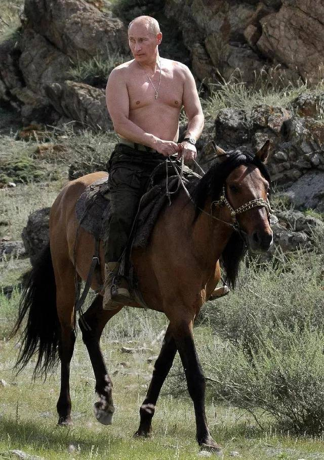
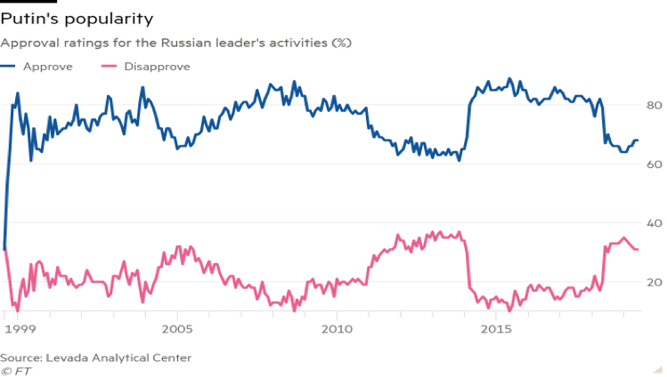

你好，我是刘瑜。这里是《比较政治学》节目的第八讲，欢迎继续收听。
在所有的转型国家中，俄罗斯可能格外引人瞩目。毕竟，俄罗斯是前苏联遗产的主要继承国，而苏联是冷战两大霸主之一。当年，正是苏联的崩溃彻底改变了世界格局，因此，从苏联的废墟之上能够生长出什么样的国家、什么样的民主，不但具有重大的理论意义，而且直接影响着世界格局的变迁。战场上讲“擒贼先擒王”，其实做社会科学研究也差不多，抓住一些最重量级的国家，观察它的变化轨迹，分析它的发展逻辑，或许有利于我们理解整个政治浪潮的走势和机制。
俄罗斯失败的民主转型：不自由的民主
遗憾的是，如果我们把政治转型理解为从峡谷的一边跨越到另一边，30年过去了，俄罗斯并没有完成这种跨越。相反，它似乎是掉到峡谷中间去了，并且干脆在峡谷里面安营扎寨了，一副“我就在这里待下去了，哪也不去”的架势。对于普京政府及其支持者来说，这是走出了一条“具有俄罗斯特色”的民主道路。
但是，对于很多期待俄罗斯成为“自由式民主”的人来说，俄罗斯的民主转型则是失败了。失败的标志之一，就是普京自2000年上台之后，就神奇地成为俄罗斯政坛的不倒翁。本来2024年他的任期终于要结束了，但是最近俄罗斯修改宪法，意味着普京有可能还要连任，一直连任到2036年。所以，对于很多俄罗斯人来说，真的是“山无棱，天地合，乃敢与君绝”。
事实上，在很多观察者看来，俄罗斯的转型不但失败了，而且失败得非常经典。这是什么意思呢？就是说俄罗斯的民主转型失败不是一个偶然的、孤立的、暂时的失败，而是代表了一个类型，这个类型，被很多人称为“不自由的民主”。
不自由的民主：民主在崛起，自由却没有与之同步
什么叫“不自由的民主”？这个概念，最早由一个记者Zakaria（法里德·扎卡利亚）开始普及。从90年代中期开始，他就在新兴民主中发现一个奇特的现象：一些明明是通过民主选举上台的政治家，却挣脱权力的制约机制，打压反对派的言论和行动空间，以此实现权力的巩固。
1997年，Zakaria在《外交事务》杂志上发表了一篇著名的文章，名字就叫“不自由民主的崛起”。在这篇文章里，他这样写道：“近一个世纪以来，在西方，民主意味着自由式民主，其特征不仅仅是自由公正的选举，而且是自由主义，也就是法治、分权、言论自由、宗教自由、财产保护等等；今天，自由式民主的这两股力量，曾在西方政治传统中合二为一，却在世界上的其他地方一分为二。民主在崛起，宪政自由主义却没有与之同步。”
从这段话中，我们可以看出，Zakaria提出“不自由的民主”这个概念，是因为他发现，民主的发展和自由的发展未必同步。我们常常假定，民主必然带来言论自由、宗教自由、市场自由，但是Zakaria发现，在新兴民主中，民主的出现未必伴随着这些自由的出现。所以，“不自由的民主”是“一条腿走路”的民主。一方面，它具有民主的外壳——也就是说，它往往有周期性的选举，甚至选举也有一定的竞争性，这是它与传统的威权体制不同的地方；但是，另一方面，通过选举产生的执政者又限制政治自由，以民主的名义打压反对派，使下一轮的政治竞争在不公平的起跑线上展开，以此实现权力稳固。
如果用唱歌比赛来比喻，传统的威权政体根本就没有比赛可言，内定一个冠军，比赛还没有开始就直接结束了。但是“不自由的民主”不是这样，它有比赛，有观众投票，但是它让选手A大展歌喉，灯光、舞台、演唱时间，样样都给足，而选手B、选手C、选手D……唱了两句就被夺走麦克风了，或者唱着唱着灯光黑了，或者干脆在他们唱歌的时候播放各种噪音，以至于虽然最后的确有观众投票，但是观众很难对选手A之外的任何选手留下美好印象，选手A自然成了赢家。这就是“不自由的民主”，它并不取消民主，只是扭曲它而已。
“不自由民主”的俄罗斯：威权与政治暗杀
当代俄罗斯被很多学者视为“不自由民主”的典型。一方面，它的确拥有民主的外壳。今天的俄罗斯不同于前苏联或者沙皇体制，它有周期性的多党选举，而且它的选举不完全是花瓶式的，有一定的竞争性，比如，2018年的总统选举中，尽管普京的得票率高达77%，但是这个数字也意味着，有近1/4的选民并没有投票给他，而是投给了其它小党。
但是，另一方面，无可否认的是，俄罗斯的政治自由是大打折扣的，甚至是稳步倒退的。比如，2013年，纳瓦利内（俄语：Алексе́й
Анато́льевич
Нава́льный），一个比较有政治号召力的反对党人士，还参选了莫斯科的市长选举，甚至赢得了27%的选票，但是，2019年，当局就吸取教训，不让他参选了，甚至几度把他给抓起来。
因为此类的限制，俄罗斯政坛上虽然有反对党，但是这些反对党基本上是“劣胜优汰”的，什么意思呢？就是真正像样的反对党不会给你留下，留下的都是“歪瓜裂枣”式的。用一个批评者的话来说，这些所谓的反对党的候选人往往如此之不堪，以至于他作为异议人士都会迫不及待地想给普京投票。
那么，不能参加选举，和平集会可以吗？那得看政府的心情。反对派集会需要政府批准，而政府多半不会批准。如果一定要聚众，那就只能抓你了，抓了之后，你就有了犯罪记录，而根据法律规定，有犯罪记录的人是不能参选的。所以，这套逻辑可以说是环环相扣、行云流水。
那么，不集会游行，办个独立媒体可以吗？那就看你有没有误解“独立”的意思。过去20年，俄罗斯政府以收购、起诉、吊销执照、抓捕投资人等等方式将自由派的媒体几乎是一网打尽。有一份报纸不服，叫《俄罗斯新报》（Novaya
Gazeta），因为一直“执迷不悟”，从2001年至今，已经有6个记者被神秘谋杀了，其中最著名的就是2006年被杀害的女记者波利特科夫斯卡娅（俄语：Анна
Степановна Политковская）。
一位女士献花缅怀安娜·波利特科夫斯卡娅，图片来源https://mashable.com/2015/03/09/nemtsov-murder-nonsensical-russia/
这个人可能大家听说过。这位勇敢的女记者曾经追踪报道车臣战争，激烈地批评过政府的车臣政策，但她的结局是被枪杀在自家的公寓楼里。关于这个《俄罗斯新报》，我看到的一个最新报道，是说它的主编收到一个礼物，打开一看，里面是六只康乃馨和一个刚刚被割下的羊头。
办报纸也危险，那做公民组织呢？不是不可以，但是显然你不能从事“极端主义”活动，至于什么叫“极端主义”，则模糊不清。而且，如果非政府组织的资金来源里有国际资助，哪怕只是一个研究机构，也要登记为“外国代理”。“外国代理”听起来是不是很难听？难听，就是他们要的效果。
既然办报纸、搞组织都太难了，那个体言论呢？同样得小心掂量，尤其如果你是有一定社会影响力的人物的话。俄罗斯的前首富霍多尔科夫斯基（俄语：Михаи́л
Бори́сович
Ходорко́вский），一个石油大亨，因为公开批评普京被各种调查，反正偷税漏税、欺诈、盗窃、腐败，总有一款适合你。最后他被关了10年，被放出来后就逃亡到瑞士去了。
或许，对俄罗斯政治自由状况最鲜明的注脚，就是频繁的政治刺杀。刚才我们讲到记者波利特科夫斯卡娅的神秘死亡，其实，她的死不是偶发事件，暗杀几乎是俄罗斯政治的一个传统。大家想想，1934年苏联中央委员基洛夫（俄语：Серге́й
Миро́нович
Ки́ров）被神秘刺杀，成为苏联大清洗的序幕；再想想苏联的开国之父之一托洛茨基（俄语：Лев
Давидович
Троцкий）和斯大林交恶之后，哪怕逃到了墨西哥，也没有逃过被暗杀的命运，真的是“虽远必诛”。
在这个背景下，俄罗斯当代的政治暗杀现象就不足为奇了。最近一次的著名暗杀是针对反对派政治家涅姆佐夫（俄语：Борис
Ефимович
Немцов），这个人曾经在叶利钦时代担任过副总理，但在普京时代一直批评政府，曾数度入狱。2015年，就在克里姆林宫附近的一座大桥上，他女朋友的旁边，身中四枪，当场死亡。
对于异议人士，“虽远必诛”的传统也保留至今。大家可能也或多或少从媒体上读到过，俄罗斯知名反对派人士在异国他乡常常被暗杀，而且死法也经常是神秘诡异，有放射性物质中毒的、有神经中毒死亡的、有在公寓被勒死的、有在大街上被枪杀的、有自杀或者被自杀的……这些神秘死亡往往有一个共同特点，就是最后查无真相——要么是追查不了了之，要么是追踪到一个环节线索就断了，似乎所有此类的政治刺杀都有一个信息熔断机制，一旦触及到某个点，信息就会自动黑屏。
“不自由民主”的核心：魅力型领袖成为观念的化身
所以，从上面的描述可以看出来，俄罗斯有选举，但是少自由，这两个元素相互组合，就构成了“不自由的民主”。在这个组合当中，一个枢纽性的元素，就是魅力型的领袖：普京。事实上，魅力型领袖，不仅是当代俄罗斯政治的特色，也是几乎所有“不自由民主”政体的特点。
这一点并不奇怪，因为要成为选举当中的“常胜将军”，必须具有个人魅力。大家在媒体上可能也看到，普京一会儿赤裸着上身骑马，一会儿弹钢琴，一会儿冬泳，一会儿柔道，为了赢得民心，也是蛮拼的。

普京骑马图
这和苏联政权后期那些令人昏昏欲睡的领袖形象形成鲜明对比。有一项民调甚至显示，有1/5的俄罗斯女性想嫁给普京，这个受欢迎程度，全世界估计也就只有乔治·克鲁尼能跟他比一比了。
可能有人会问，为什么俄罗斯民众会听任政府打压政治自由？总统骑骑马、弹弹琴就能赢得这么多选票吗？当然不是。俄罗斯人肯定没有那么幼稚。普京的号召力绝不仅仅是因为他善于凹造型，而是因为他成功地将自己塑造成了一系列价值的代言人。什么价值？经济发展、打击豪强，以及最重要的——民族复兴。
我们知道，如果有人在街上向我们兜售一堆酸苹果，我们多半不会去买，但是，如果有人把一堆酸苹果和一堆甜樱桃放在一起，说买五斤苹果、送五斤樱桃，那我们很可能就一个箭步就冲过去买了。这叫什么？这叫“捆绑销售”。在任何国家，面对民众，恶都是很难被推销的，打压异议分子、限制政治自由是一种恶，直接推销它是很难奏效的，但是，当恶与善被捆绑销售，人们却有可能为它慷慨解囊。
在俄罗斯，很长一段时间里，普京被视为经济救星。大家可能知道，俄罗斯在90年代的转型之初，由于转型的阵痛，经济一度严重下滑，而普京上台之初，俄罗斯经济复苏，2000-2007年GDP的年均增长率达到7%。尽管这很大程度上是国际油价飙升的结果，但在很多普通的俄罗斯人看来，这是普京政府英明决策的证明。
不过，过去十年左右，普京作为经济救星的形象也陨落了。为什么？成也萧何、败也萧何，国际油价下跌了。过去十年，俄罗斯经济增长越来越慢。甚至，2013年以来的6年里，俄罗斯有5年真实收入下跌，2019年的真实收入比2013年下跌了10%。因此，很多分析家说俄罗斯经济遭遇了“失去的十年”。
尤其尴尬的是，这种下跌与前苏联阵营一些邻国的发展形成鲜明对比，90年代初，俄罗斯的人均GDP与波罗的海三国、波兰、匈牙利等中欧国家不相上下，但是到2019年，曾经的“老大”已经明显落后于这些邻国。我知道有些人信奉“政府越威权，经济越发展”，但是至少从前苏东阵营转型后的命运来说，并非如此，事实上，正好相反。波罗的海三国、中欧四国这些苏东国家，经济比俄罗斯更发展，政治也比它更民主和自由。
没有经济牌可打，没关系，普京还有第二张牌：打击豪强。从2000年上台伊始，普京就开始打击俄罗斯的“经济寡头”。大家可能知道，在叶利钦时代，国有资产私有化的过程中，由于缺乏公正透明性，俄罗斯崛起了一批“经济寡头”。
普京上台后，对很多经济寡头展开调查、拘捕，一时间大量的经济寡头要么破产、要么被抓，普京因此树立了“不畏豪强、为民做主”的政治形象。当然，这个形象也不完全经得起推敲，有学者分析指出，普京其实并不是打击所有的寡头，只是打击那些“不听话的”而已。在国际透明度的腐败排名中，2019年，俄罗斯在180个国家当中排名第137位，所以，反腐实在不能算是普京政府的强项。
不过，即使经济救星和打击豪强这两张牌都站不住脚，也没有关系，普京真正的王牌是民族主义。对很多俄罗斯人来说，转型后最大的创伤不是经济的短期困难，不是腐败，而是民族自豪感的沦落。
前苏联是主导世界命运的超级大国，而在更早期的历史上，俄罗斯作为一个横跨东西的帝国，它的国土面积本身就是它战斗力的说明。然而，转型之后，俄罗斯突然坍塌成一个地区性国家，经济萎缩、文化凋敝，连周边小国都纷纷跳到欧盟这只船上去。俄罗斯人一落千丈的心情可想而知。
正是在这个背景下，普京出现了。我们都知道特朗普有个口号，叫做“让美国再次伟大”，其实普京的使命感是一样的，就是“让俄罗斯再次伟大”。上台后，他发动了一系列成功的军事行动。2000年镇压了车臣叛乱，2008年入侵格鲁吉亚，2014年吞并克里米亚，最近则频繁介入中东战局……这一系列的动作让俄罗斯人重新看到了民族复兴的希望，仿佛慢慢走远的帝国背影突然转身，重新回到了历史舞台的中心。
大家不妨看看解说词当中配的这个图表，这是普京上台以来支持率的变化。

可以看到，普京支持率的三次高峰，恰好与他的三次军事行动吻合。第一次出现在第二次车臣战争之后；第二次高峰期发生2008年左右，普京进军格鲁吉亚、支持阿布哈兹和南奥赛提分离主义之际；第三次高峰则是在2014年吞并克里米亚之后。当时，普京的支持率一路涨到90%，以至于有学者决定给这种因民族主义情绪高涨而上升的政府支持率起个名字，叫做“克里米亚效应”。
所以，政治强人要建成“不自由的民主”，光靠作秀是不可能的，光靠拳头也是不够的，他必须同时成为观念的化身，而这个观念能够击中相当一部分人的心灵。在俄罗斯，这个观念的支点就是民族主义。
任何民族都需要自豪感，但是对于一个虎落平阳的民族，对自豪感的渴望就格外迫切。普京的出现，正是迎合了这样一种心理需求。所以，一个巴掌拍不响，缔造“不自由的民主”，不仅仅是一个自上而下的操控过程，同时也是一个自下而上的民意表达。
所以，我们发现，不自由的民主，本质上是一种威权-民粹主义，它的一头是威权，另一头则是民粹。一个独夫再厉害，单枪匹马也很难走远。反过来，民意也可以因为权力的魔法而被不断放大、强化、升温。本来俄罗斯的民族主义情绪可能只有3、40度，但是长期的受害者教育、复仇宣传给它慢慢加温，结果就是长期处于沸点状态。
结语：政治文明的变革，须等待文化的缓慢脚步
遗憾的是，“不自由的民主”绝不仅仅是一个俄罗斯现象。在新兴民主当中，它已经成为一种流行病。在查韦斯的委内瑞拉、埃尔多安的土耳其、欧尔班的匈牙利、亚努科维奇的乌克兰、穆加贝的津巴布韦、杜特尔特的菲律宾……相似的模式不断浮现。虽然他们兜售的观念内容各不相同，有的是“樱桃”，有的是“芒果”，有的是“西瓜”，但是他们所搭售的“酸苹果”却是相似的：一个魅力型的领袖通过选举赢得权力，再通过打压自由来赢得更多选票，下次胜利后更加严厉地打压政治自由，由此形成一轮又一轮的恶性循环。民主不但没能约束权力的滥用，反而为滥用权力提供了合法性。
所以，Zakaria在这一点上是对的：民主和自由有交叉之处，但它们并非同一事物。民主是关于如何产生执政者的规则，而自由则是关于如何限制执政者的规则。
遗憾的是，学习民主可能比学习自由要容易得多，因为前者是一种制度，而后者是一种习俗。制度改写易，移风易俗难，这种不对称或许正是为什么新兴民主常常掉入“不自由民主”的陷阱。
不过，有一点Zakaria说的并不正确，在西方，正如我们之前的节目所指出的，民主也并非从一开始就是“自由式民主”，无论是法国大革命，还是德国魏玛共和国，最后都走向了“不自由的民主”。事实上，在任何国家，当政治制度迅速变革，它都可能与既有的政治习俗脱节，只能停下来等待文化缓慢的变迁。遗憾的是，人类政治文明的变迁没有捷径，它必须穿过千千万万人的心灵。
好，今天就讲到这里，感谢收听，我们下期节目再见！